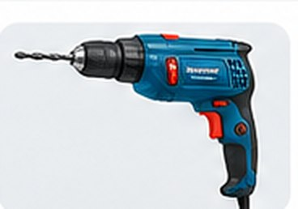
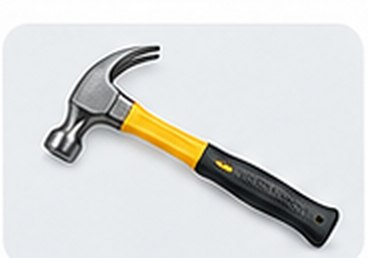

F001 - Furadeira elétrica
Furadeira para perfurações em madeira, metal e alvenaria.

Furadeira para perfurações em madeira, metal e alvenaria.

Escada dobrável de 6 degraus, ideal para pequenos reparos.

Martelo de uso geral, indicado para pequenos reparos e montagens.